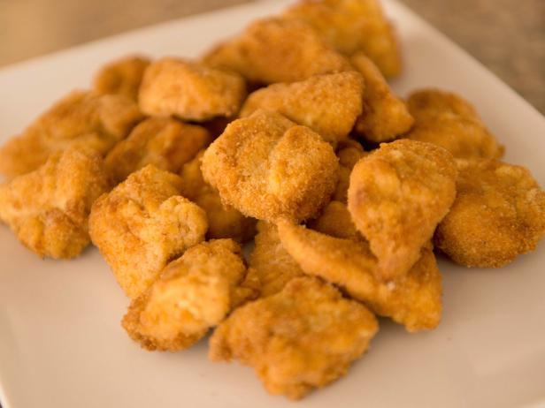

Broast
Broast is a Pakistani dish made from chicken, beef, or mutton. It is a deep-fried chicken dish, which is marinated in a mixture of spices and yogurt. It is a popular dish in Pakistan and is also served in many restaurants in the United States and Canada.
Fries
Fries, or French fries, are batonnet or allumette-cut deep-fried potatoes. The potatoes are first soaked in water for several minutes to reduce the amount of oil absorbed during cooking. They are then deep fried in oil at 180 °C (356 °F) until golden brown.
Burger

A hamburger is a sandwich consisting of one or more cooked patties of ground meat, usually beef, placed inside a sliced bread roll or bun. Hamburgers are often served with cheese, lettuce, tomato, onion, and pickles.
Pizza
Pizza is a savory dish of Italian origin consisting of a usually round, flattened base of leavened wheat-based dough topped with tomatoes, cheese, and various other ingredients, which is then baked at a high temperature.
Nuggets
A chicken nugget is a small piece of chicken made from chicken breast or thigh meat, formed into a small patty, breaded, and deep-fried. Chicken nuggets are popular fast food items worldwide.